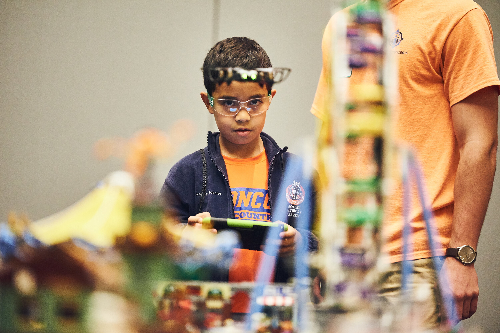

Our Maps, Apps & Drones Tour And GeoBus Celebrate GIS Day At UCF
3 minutes read

GIS Day Team Members and Volunteers
GIS Day 2019 at UCF: A Focus on Maps, Apps and Drones hosted by UCF’s Citizen Science GIS and GeoBus team in the Department of Sociology was a success on Thursday, Nov 14. The event took place in the Student Union on the UCF main campus. We were at room capacity with the fire code, and nearly 400 students/teachers/families completed hands-on activities focused on maps, apps and drones with our Citizen Science GIS and GeoBus team.
tylercopelandphoto.com
Dr. Hawthorne and the Catch box Students started their day with a presentation and video to get them excited about the "maptastic" activities ahead of them. They were introduced to DroneCat, our mapping mascot, and answered questions with the "Catch box" - a plush microphone perfect for tossing around the room and getting students engaged in lively discussion.
Students in attendance were able to draw connections between their coursework in the classroom and the hands on learning provided by the tour's many interactive stations.
Team member Elise and a Teacher Lindsey Pulse, an eighth-grade teacher at Mater Palms Academy, shared the following - “currently, we are working with coding, and they love coding and drones, so I thought it would be neat to take them here and learn more about it.”
Dr. Bo Yang teaching students about contour maps with the AR Sandbox Rotating in groups, the newly minted citizen scientists jumped from the Florida Keys to the panhandle on the National Geographic Giant Map, learned about applications of GIS during natural disasters through our Lego city activity, and mapped kindness in our ArcGIS Online mapping app. The stations also included our ArcGIS Online sustainability application, three drone lanes, an AR sandbox, digitized mapping, and two Sphero coding robots.
Team member Hunter teaches a young citizen scientist to fly a drone over the Lego City Citizen Science GIS and GeoBus would like to thank our amazing sponsors and partners for making this event possible: National Geographic Education, Esri, GeoTel, UCF Puerto Rico Research Hub, VHB, UCF Utilities and Energy Services, National Science Foundation (NSF), UCF Center for Initiatives in STEM, and UCF Department of Sociology. None of what we do would be possible without the donations and support we receive from these amazing organizations. They truly are driving science's next generation!
Our team here at Citizen Science GIS and GeoBus would like to give a huge thank you to everyone who came out in support of GIS Day 2019, from the volunteers, to the students, teachers, parents, and even some of our partners. We'll see you all again next year for GIS Day 2020!
Missed GIS Day but still want to see your students transformed into Citizen Scientists on our Maps, Apps and Drones Tour? We'll come to you! Sign up here to experience science come to life in your classroom: https://docs.google.com/forms/d/e/1FAIpQLSeiBuIp1FB9P66BGR4QahTcy-mvHIq5NwiTPr0u5lWtUAyTyQ/viewform
https://youtu.be/JUqbu33VGXE Follow us on social media to learn more about our adventures on the Maps, Apps, & Drones Tour, as well as on our other projects: Instagram, Twitter, LinkedIn, Facebook.

tylercopelandphoto.com All photos are taken by our awesome team photographer Tyler Copeland.